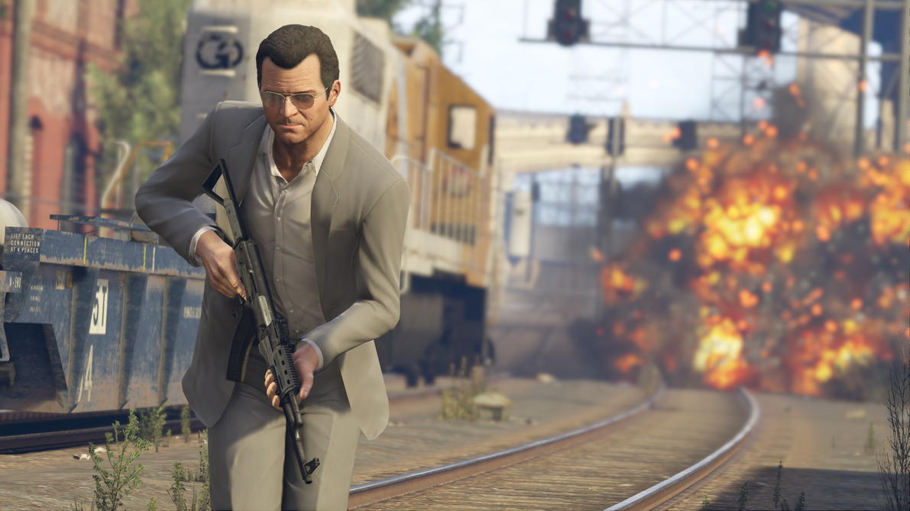

Los Mejores Juegos en todas las plataformas

FIFA 21

Precio: 60€
Descripción: Es un juego de fútbol,
tiene diferentes modos de
juego; modo carrera,
Ultimate Team que consiste en crear tu equipo y jugar on-line, también esta el PES 2021 pero
en mi opinion es mejor.
Si quieres jugar es muy divertido pero muy peligroso, porque te picas mucho
Plataformas: XBOX, PS4 y PS5, Nintendo Switch y PC
The Last Of Us

Precio: 9,50€
Descripción: Es un juego sobre un hombre que pierde a su hija en un apocalipsis zombi,
después de 20 años, y con el apocalipsis controlado recoge a una niña y recorren casi todos Estados
Unidos, pero al final se hacen muy amigos y acaban juntos hasta que el protagonista muere.
El gameplay dura unas 10 horas y tiene 3 modos de juego: el historia, el Left Behind que es la historia de Ellie, la niña y un multijugador online. Yo lo recomiendo, ya que es muy divertido
y entretenido y si te gusta el miedo es perfecto. También hay una segunda saga.
Plataformas: PS4 y PS3
Call of Duty Black Ops

Precio: 6€
Descripión:Es unos de los primeros Call of Dutys, de todos los Call of Dutys que he jugado (unos 6 o 7) es mi favorito porque es muy realista y original y la historia
de la campaña es FLIPANTE.
Tiene 3 modos de juego: Campaña, Zombis y Multijugador. Pero tiene un problema, que es para plataformas muy antiguas
Plataformas: PS3, Xbox 360, Wii, Windows y NINTENDO DS
GTA V

Precio: 9,25€
Se trata de una aventura de acción de mundo abierto con multitud de misiones pricipales y secundarias en la que encarna
mos a tres personajes distintos: Trevor, Michael y Franklin. Además, cuenta con GTA Online, el modo mu
ltijugador en línea de GTA 5. ... GTA V se ambienta en Los Santos, ciudad ficticia basada en Los Angeles
Plataformas: PlayStation 4 y Xbox One, PlayStation 5, Xbox Series X y Xbox Series S
Minecraft

Precio: 20,95€
Descripción: Minecraft es un juego con un mundo abierto en el que puedes hacer lo que quieras, hay dos modos de juego; Creativo y superviviencia, en su
pervievncia, tienes que sobrevivir a enemigos, y el final se da cuando matas al dragón del End. Fue creado por "Notch" en 2009